01
本地推理与角色卡
MNN 优先，GGUF 兼容；支持 PNG / CC_V3 角色卡与世界书直导、KV 前缀缓存复用。模型加载后，飞行模式也能继续聊。
MNN · llama.cpp · CC_V3本地引擎 →
ANDROID · LOCAL-FIRST AI WORKSPACE
MCA 把本地模型、角色卡、生图、生视频、DSH 工作台与 Local API 装进一台 Android 手机。模型在你手里，密钥在你设备里；云端接口是可选项，不是前提。
v0.4.1/arm64-v8a/612.7 MB · 为什么这么大？
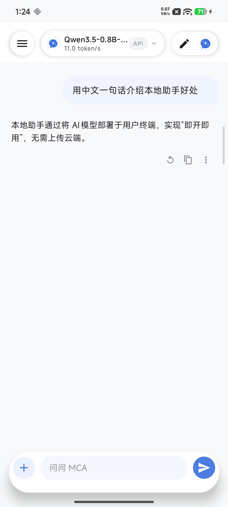
真机截图 · 飞行模式 · 模型完整加载后
开屏里的四束光，对应四种能力：本地推理、云端接入、图像与视频、Agent 与 API。它们分开时是零件，合起来才是一次完整的对话。
MNN 优先，GGUF 兼容；支持 PNG / CC_V3 角色卡与世界书直导、KV 前缀缓存复用。模型加载后，飞行模式也能继续聊。
OpenAI 兼容与 Anthropic Messages 协议，配合 SearxNG / Brave / Tavily / Jina 智能联网检索与来源卡片，随时可切回本地。
stable-diffusion.cpp、MNN-Diffusion、QNN 与 MediaTek 后端，断网也能给角色配图；生图与 Wan 2.2 视频为实验能力，取决于完整模型包。
本地工具、MCP、记忆、DSH 0.2.2-rc.1 预览工作台，以及 11435 端口的 OpenAI 兼容 Local API，让电脑或脚本直接调用这台手机。
同一个底座上还有三个独立工作台：DSH、生图、生视频。它们各有自己的入口、自己的模型包和自己的边界。下面不是三句简介，是三个能展开看的页面。
DSH 不是把网页塞进 WebView。它有一份独立的 Node 内核、独立的会话数据、独立的网关；启动过程分六个阶段，任何一步失败都会停在真实的失败点，而不是继续假装“加载中”。
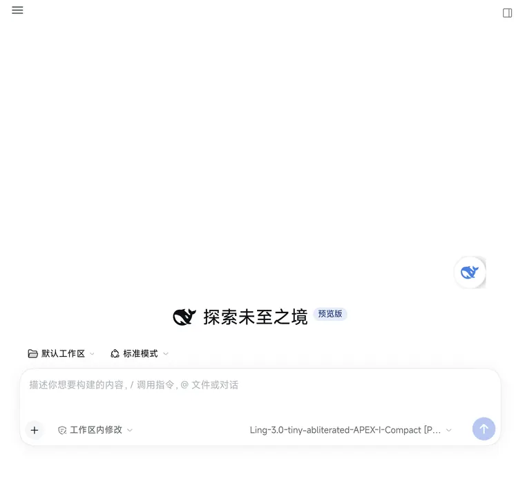
DSH 起始页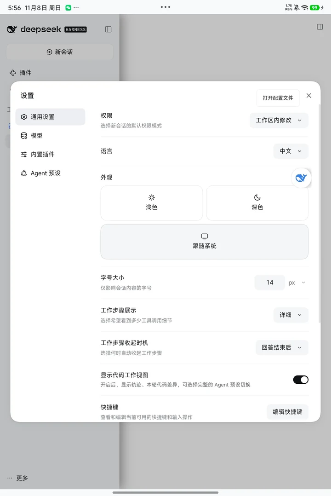
设置页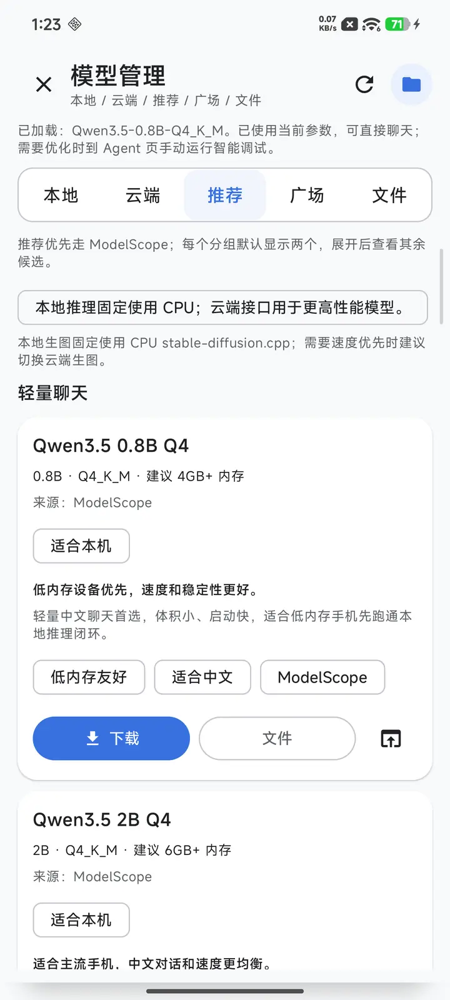
模型页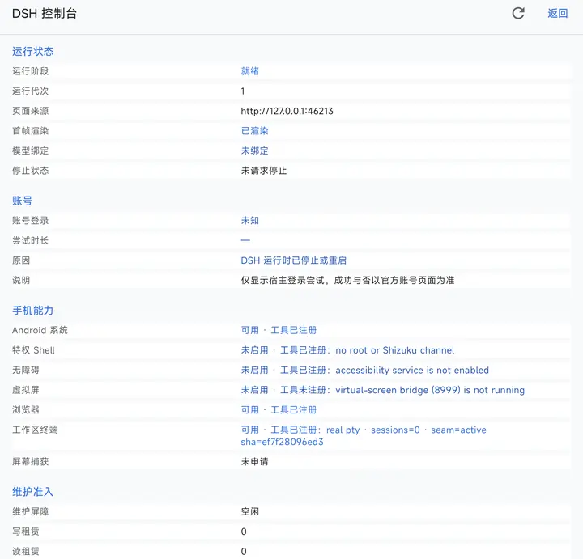
DSH 控制台六阶段全部出现，才允许说“DSH 起来了”。
DSH 是开发预览内核。它也是安装包体积的主要来源之一——612.7 MB 里有很大一块是它。
图片工作台有自己的引擎、自己的模型包、自己的图库。可以在页面里生成，也可以在聊天中直接让角色画一张。
FIG. 05 八张模板卡里的前四张，取自平板真机截图；点击即把提示词带进输入框。
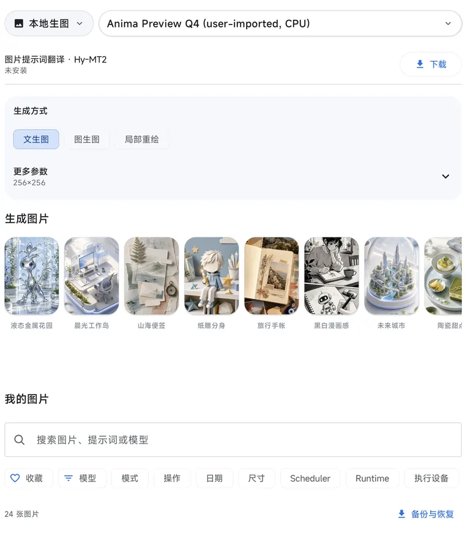
图片工作台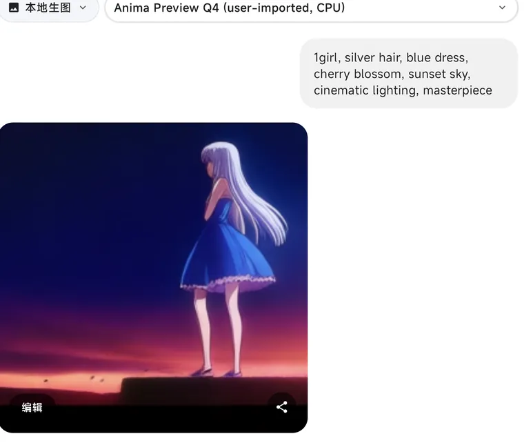
平板出图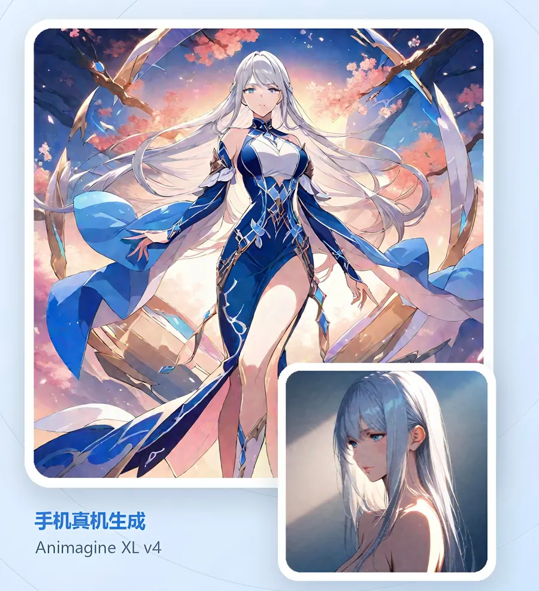
手机出图| 引擎 | 位置 | 说明 |
|---|---|---|
| stable-diffusion.cpp | 本地 | 主力路径，支持 SDXL 系 |
| MNN-Diffusion | 本地 | 移动端加速路径 |
| QNN / HTP | 本地 | 骁龙 NPU，需 QAIRT SDK |
| LiteRT Qualcomm | 本地 | LiteRT 加速后端 |
| MediaTek NPUG/DLA | 本地 | 天玑 NPU 适配 |
| OpenAI Images | 云端 | 用你自己的 key |
| DashScope Image | 云端 | 阿里云百炼 |
本地生图是实验能力：需要完整模型包（扩散主模型 + VAE/AE + 文本编码器），以真实 native 加载与出图为准，不保证每台设备都能跑。上面两张成果图分别来自平板（Anima Preview Q4 / CPU）与手机（Animagine XL v4）。
生视频不是一个“输入框 + 生成按钮”。它把 Wan 2.2 的推理拆成七个可编辑节点：改分辨率、改帧数、换 LoRA、重排版，都在图上完成。
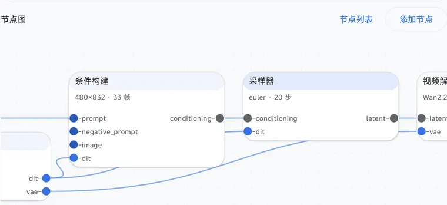
画布节点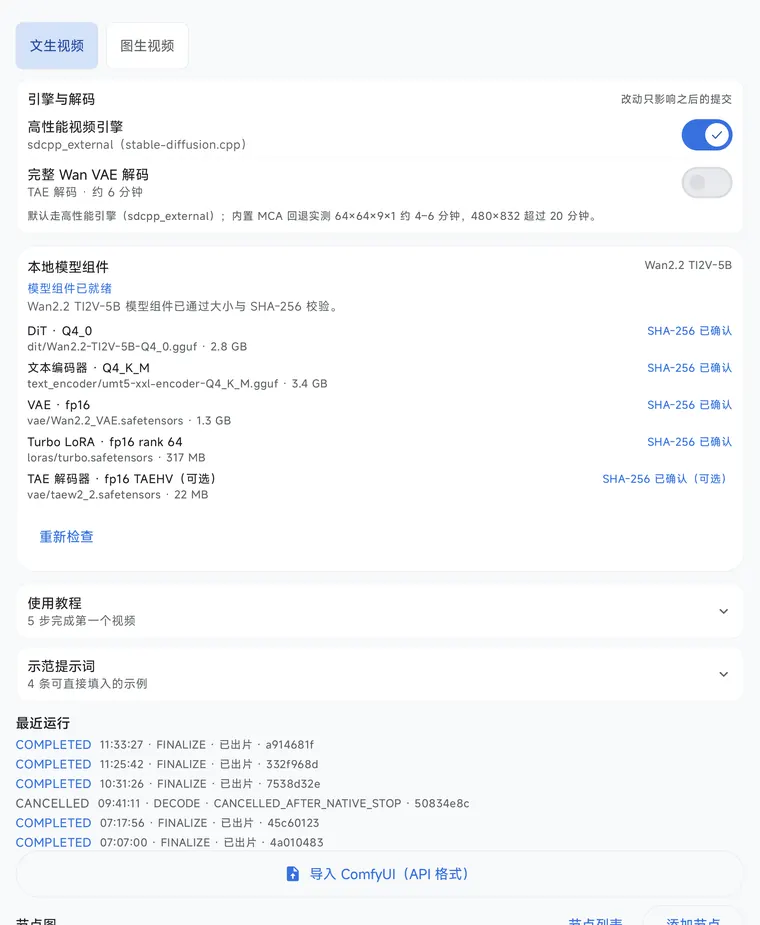
组件校验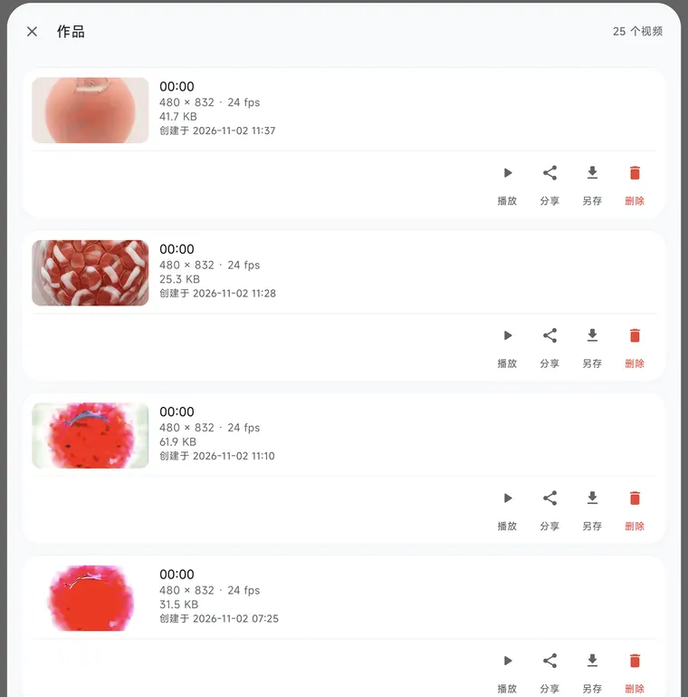
作品库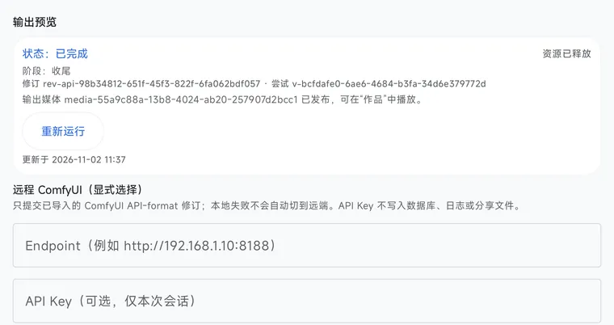
输出预览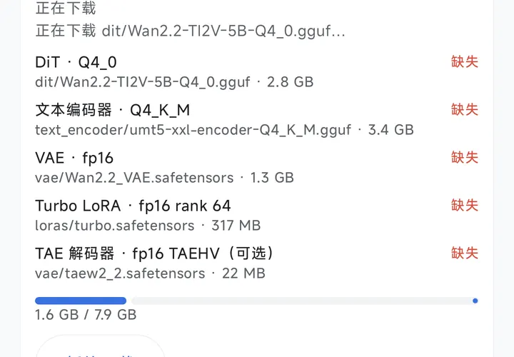
组件下载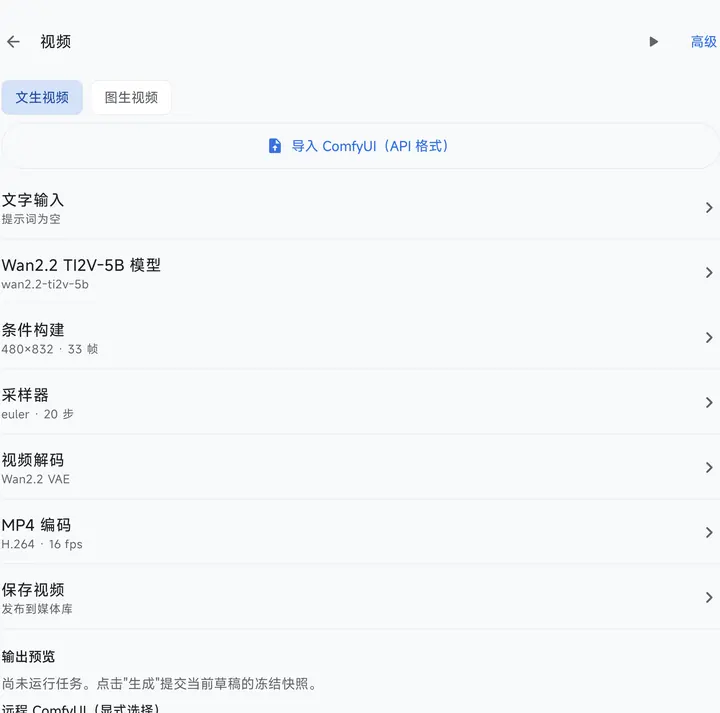
节点列表FIG. 15 七节点默认链；图生视频会额外挂上「输入图片」支线。
每次提交在「最近运行」里留有阶段 + 终态 + 修订号：COMPLETED · FINALIZE · 已出片 与 CANCELLED · DECODE · CANCELLED_AFTER_NATIVE_STOP 都照实显示。取消不会伪装成完成，完成也不会只显示一个转圈。
雨夜的旧城街道，霓虹招牌在积水里晃动，一把红伞缓缓穿过画面，镜头保持不动。
清晨窗台上的柠檬与玻璃杯，阳光缓慢移动，细小尘埃在光束里漂浮，浅景深特写。
黄昏的海岸线，云层缓慢流动，海浪一层层推上礁石，海面泛着金色反光。
穿白色风衣的旅人站在雪原中央，围巾被风轻轻吹起，镜头从远处缓慢推近。
四个示例都来自 app 内置的示范提示词：单镜头、短动作，不带字幕、不带多镜头切换。
视频是实验能力：APK 从不内置 Wan 权重，7.9 GB 组件需单独下载，并逐件通过大小与 SHA-256 校验才允许提交（FIG. 10 就是全部通过的状态）。执行未接入时提交会被明确拒绝，不会伪造进度。上面那 25 个 480×832 视频是在一台平板上真实跑出来的，不是渲染图。
三个工作台与聊天共用同一套本地模型所有权；切走页面不会多起一套运行时。
版本说明 ↗MCA 不按机型、芯片或白名单开权限。平板和手机装的是同一个包、跑的是同一套本地模型所有权：图片工作台、视频工作流、DSH 内核、Local API 全都在。下面都是真实截屏，不是渲染图。
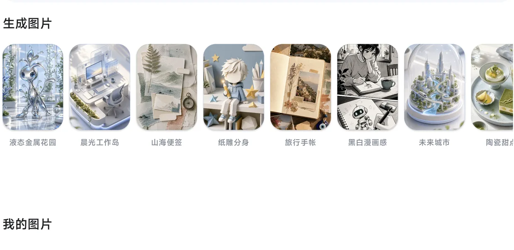
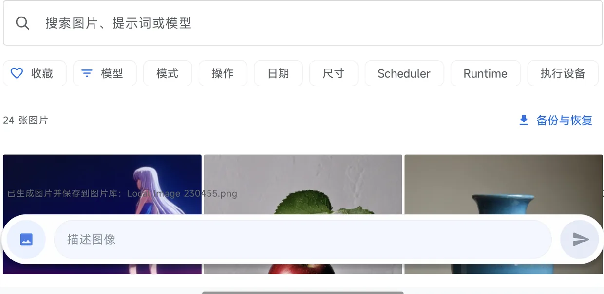
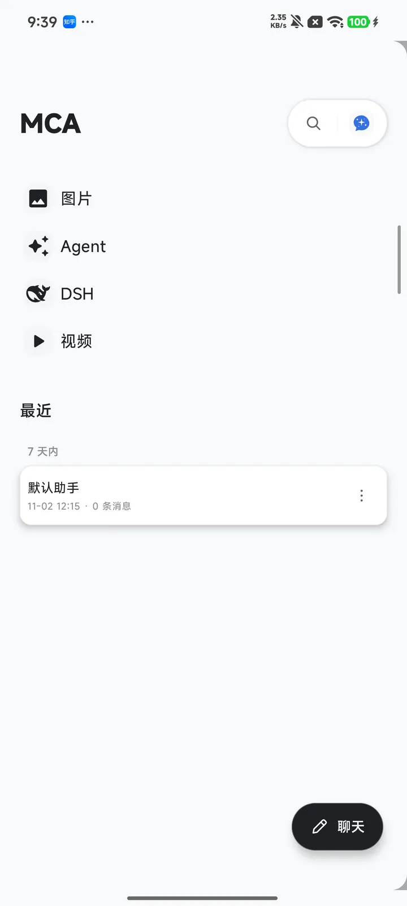
入口 · 图片 / Agent / DSH / 视频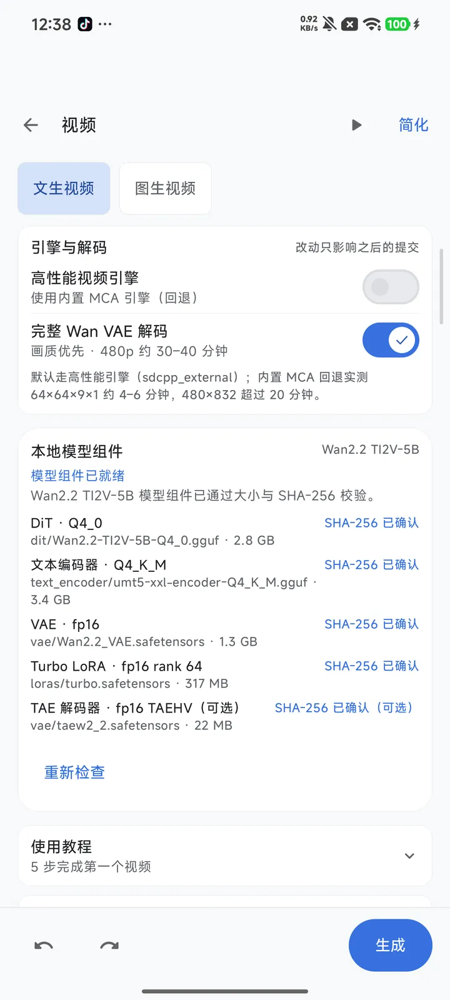
视频 · SHA-256 校验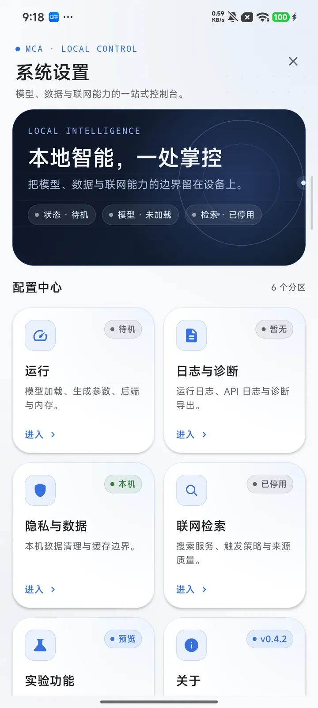
设置与诊断悬停或聚焦任一台设备，屏幕会向下滚动露出下半屏。
平板与手机截自两台不同的真机；平板的视频成果见上面 FIG. 10–13。截图里的「未加载模型 / 未启用」按实际状态保留，没有修饰成满状态。
本地优先不是一句口号。切换下面对照，看看一次请求到底去了哪里，以及代价是什么。
速度示例来自真机截图：Qwen3.5-0.8B Q4_K_M，约 11.0 tok/s。不同设备、模型与后端差异很大，这不是性能承诺。
阅读推理与后端说明 →FIG. 16 一次本地请求的路径；示例内容来自真机截图。
不内置权重，不锁定来源。MNN 优先，GGUF 兼容；ModelScope 推荐、Hugging Face 镜像与本地导入都能进同一个库。
| 来源 | 格式 | 处理 |
|---|---|---|
| ModelScope 推荐 | MNN 完整包 | 完整性校验 · 断点续传 |
| 本地导入 | GGUF / MNN | 分类 · 入库 · 绑定视觉投影 |
| Hugging Face | GGUF | hf-mirror 优先 · 官方回退 |
| 角色卡与预设 | PNG / CC_V3 / JSON | 保留完整字段 · 绑定生成预设 |
| 云端引擎 | OpenAI / Anthropic | 密钥本机加密 · 独立目录 |
下载的推荐资产走 SHA-256 校验；Hugging Face 资源优先尝试 hf-mirror.com，失败再回退官方地址。
同一个模型目录里，本地与云端引擎各自独立；切换不会改写彼此的凭据与参数。
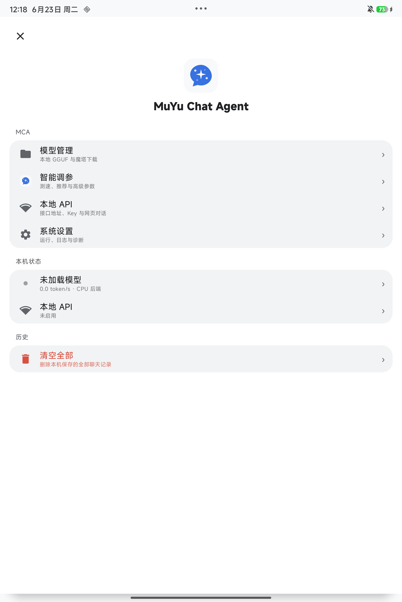
模型加载后，Local API 在 11435 端口提供 OpenAI 兼容接口。手机上的浏览器、同网段的电脑、你自己的脚本，都可以直接调用。
curl http://127.0.0.1:11435/v1/chat/completions \
-H "Authorization: Bearer $MCA_API_KEY" \
-H "Content-Type: application/json" \
-d '{
"model": "<model-id>",
"messages": [{"role": "user", "content": "你好"}],
"stream": true
}'data: {"choices":[{"delta":{"content":"你"}}]}
{"status":"ok","name":"MuYu Chat Agent"}
MCA 不会替你打开端口。开启同网段访问前，请先确认网络可信；密钥只保存在本机。
Local API 使用说明 →MCA 还在快速迭代。下面这些不是免责声明，是你在下载前就应该知道的事实。
需要完整模型包，真实 native 加载通过才算可用。不保证每台设备都能出图。
依赖运行环境；DSH 是开发预览内核，也是安装包体积的主要来源之一。
APK 与仓库都不含权重、密钥或账号体系。云端费用由你的服务商收取。
一次真机加载通过，就对所有兼容设备开放。没有设备白名单，也不按芯片型号隐藏入口。
体积主要来自内置的 DSH 预览内核与多套原生推理库，不包含任何模型权重。模型在安装后由你自行下载或导入。
下载、放模型、断网试一次。三步就知道它适不适合你。
4320a4ef2d7424e38a3afed2b2ccfee5e42713e8cb982d629e21c605f8c0e6f4
如果这里没有你的问题，去 GitHub Issues 或交流群里问；附上机型和日志，会快很多。
模型完整下载并加载后，本地对话不需要网络。下载模型、使用云端引擎、联网搜索时需要网络。飞行模式是验证它最直接的方式。
包内含多套原生推理库和内置的 DSH 预览内核；不包含模型权重。模型在安装后由你自行下载或导入，因此首次使用还需要额外的模型下载空间。
可使用上方标注「第三方镜像」的国内加速通道下载，安装前核对页面给出的 SHA-256 校验值；支持断点续传的下载器也能显著降低重下概率。安装完成后，后续版本可在「设置 → 关于」内通过应用内置的并行断点续传与镜像回退机制更新。
打开「模型管理 → 推荐」，优先下载带适合本机标记的 ModelScope MNN 完整包（自带断点续传与 SHA-256 校验）。如果你手里已有 GGUF 模型或 PNG / CC_V3 角色卡，也可以直接从本机文件导入。
Android 8.0+、arm64-v8a。能否跑动某个模型取决于内存与完整包；MCA 不按机型白名单隐藏入口，首次真实加载决定兼容性。未知设备会走通用兼容路径。
本地模型不会离开设备。只有你配置的云端端点或联网检索服务会收到对应请求；API Key 使用 Android Keystore 加密保存在本机。本网站本身不设 Cookie，也不收集任何对话内容。
GitHub Issues 或 QQ 群 1062951314。请附上 MCA 版本、机型、芯片、Android 版本、模型名称、运行后端与错误截图；不要公开 API Key 或包含隐私的日志。